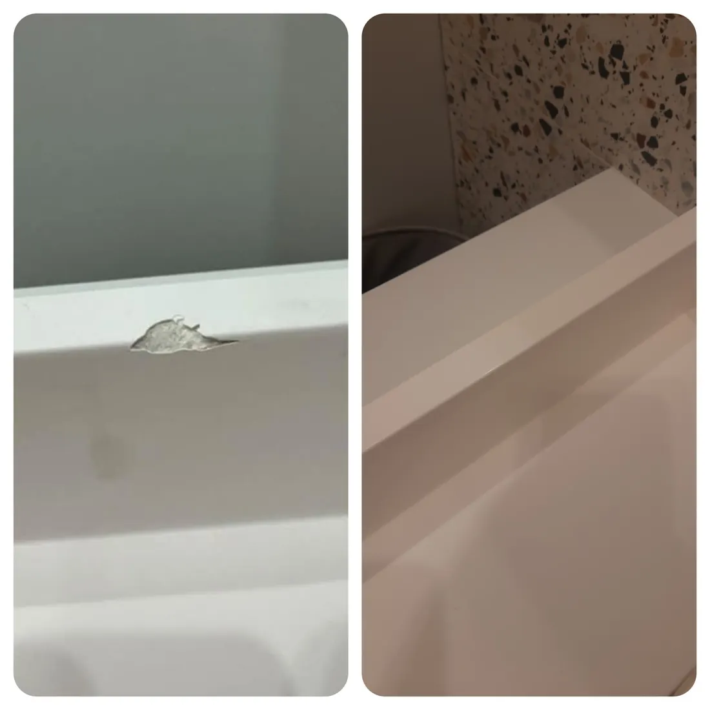

Мы в Санкт-Петербурге выполняет локальное устранение сколов на ваннах из акрила и керамики. Работа относится к поврежденному участку. Полное обновление покрытия, наливная реставрация всей ванны и работы с чугунными или стальными ваннами не входят в это направление.
Какую реставрацию ванны можно заказать
Эта услуга подходит для оценки отдельного скола на бортике или другой поверхности акриловой либо керамической ванны. Необходимость и объем работ определяем по конкретному повреждению. Уточните материал по паспорту, модели или маркировке: по белому цвету поверхности нельзя достоверно определить состав изделия.
В запросе «восстановить ванну» могут подразумеваться разные задачи. Если требуется обновить всю изношенную поверхность, полностью изменить цвет или восстановить покрытие старой чугунной ванны, это другой вид работ. Здесь оцениваем именно локальные сколы на акриле и керамике.
Скол на акриловой ванне
Для предварительной оценки нужны размер скола, его расположение и состояние окружающего участка. Укажите, находится ли дефект на борту, стенке или дне, установлена ли ванна и были ли ранее ремонтные работы. Приложите общий вид, а не только крупный план: это помогает понять задачу до осмотра.
Трещина, сквозное повреждение или заметная деформация не должны рассматриваться как обычный косметический скол. В таком случае возможность безопасной эксплуатации требует отдельной оценки. Небольшой размер дефекта сам по себе не является основанием для согласования локального ремонта.
Скол на керамической ванне
Для керамики важно состояние не только внешней поверхности, но и самой основы. Если скол сопровождается трещиной или повреждение связано с креплением, нагрузкой либо герметичностью, его нельзя приравнивать к дефекту внешнего вида. Окончательное решение по работам принимаем после осмотра.
Если задача связана с локальным повреждением глазурованной поверхности, дополнительно смотрите ответ о восстановлении глазури. Он описывает ограничения косметической реставрации керамики.
Как получить стоимость ремонта скола
- Укажите материал и модель ванны или приложите фото маркировки.
- Сделайте общий снимок, крупный план рядом с линейкой и фото дефекта под углом.
- Напишите, где находится скол, когда он появился и установлена ли ванна.
- Для партии добавьте перечень и количество изделий с каждым типом повреждения.
Пришлите данные на das05@list.ru. Предварительная оценка зависит от глубины и расположения скола, материала и объема работ. Осмотр, порядок выполнения, стоимость и срок согласуем до начала. Единой цены для всех акриловых и керамических ванн нет.
Если ванна повреждена при доставке
Зафиксируйте состояние ванны и упаковки до любых попыток закрасить или заполнить скол. Для складских и рекламационных партий можно начать с предварительного отбора по фотографиям. По согласованным работам фиксируем состояние до и после; порядок передачи и документы обсуждаем с заказчиком.
Локальный ремонт ванны, а не полное покрытие
Локальное восстановление относится к отдельному поврежденному участку. Оно не означает обновление всей изношенной поверхности, изменение цвета ванны или нанесение нового покрытия на всю чашу. Если проблема не в отдельном сколе, это нужно указать при обращении.
Для акрила и керамики нужны сведения о материале, модели, расположении и характере повреждения. Трещину или течь нельзя подменять косметическим ремонтом. Как подготовить фотографии ванны.
Можно начать с одной ванны. Перед осмотром согласуем порядок передачи и условия; выезд и демонтаж не считаются включенными автоматически. Условия работы в Санкт-Петербурге.
До / После
{kind=link}

Когда можно пользоваться ванной после устранения скола
Срок до использования и уборки уточняется для конкретного материала и выполненной работы. Правила для керамики нельзя автоматически переносить на акрил или наоборот. Какие условия использования и ухода согласовать.
Частые вопросы
Можно ли восстановить скол на акриловой ванне?
Да, локальные сколы на акриловых ваннах можно направить на оценку. Возможность ремонта подтверждаем по состоянию участка и изделия после осмотра.
Вы полностью покрываете ванну новым акрилом или эмалью?
Нет. Это услуга локального устранения сколов на акриловых и керамических ваннах, без полного обновления покрытия.
Вы работаете с чугунными и стальными ваннами?
В этом направлении рассматриваем только акриловые и керамические ванны. Ремонт чугунных и стальных ванн не заявлен.
Можно ли узнать цену по фото?
По фотографиям можно предварительно оценить задачу. Точную стоимость, срок и порядок выполнения подтверждаем после осмотра и согласования работ.